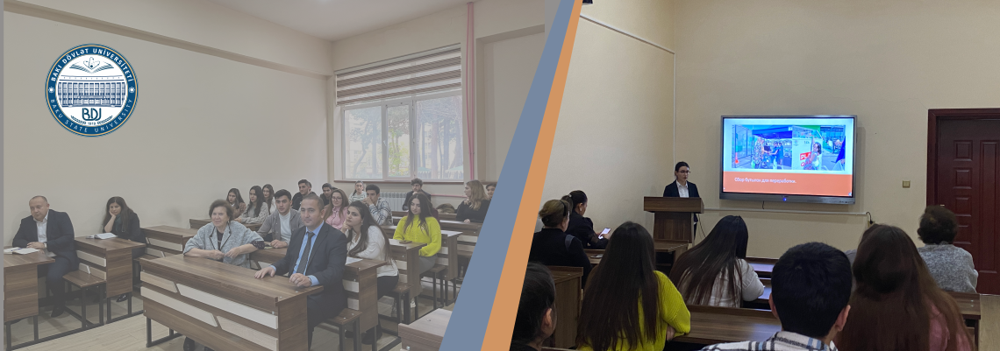

BDU-nun şəhid məzunları Şəhriyar Həbibi və Fikrət Zeynallının
məzarları ziyarət olunub

BDU-nun Ekologiya və torpaqşünaslıq fakültəsinin Tələbə Elmi
Cəmiyyətinin növbəti seminarı
BDU-da Azərbaycan Yazıçılar Birliyinin katibi Səlim Babullaoğlu
ilə görüş keçirilib
BDU-da seminar: “Müasir dövrdə Türkiyənin xarici siyasətində əsas
trendlər”
BDU-nun Kitabxanaçılıq-informasiya fakültəsinin əməkdaşının
ingilis dilində dərs vəsaiti nəşr olunub
12 noyabr - Azərbaycan Respublikasının Konstitusiya Günüdür
BDU-nun Biologiya fakültəsində Vətən müharibəsi iştirakçıları ilə
görüş
BDU-da Sumqayıt Dövlət Universitetinin 60 illik yubileyinə həsr
olunmuş dəyirmi masa
Xəbərlər arxivi

Fəxrlərimiz

Heydər Əliyev
Azərbaycan xalqının Ümummilli Lideri

Zahid Xəlilov
Riyaziyyatçı alim.

Yusif Məmmədəliyev
Dünya səviyyəli kimyaçı alim.

Murtuza Nağıyev
Kimyaçı, Azərbaycanın Əməkdar Elm Xadimi, akademik.

Əşrəf Hüseynov
Riyaziyyatçı alim

Aida İmanquliyeva
ərəbşünas, tənqidçi, tərcüməçi.